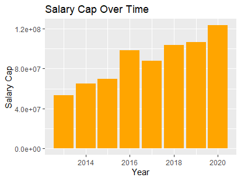
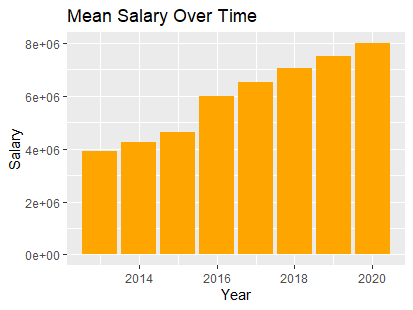
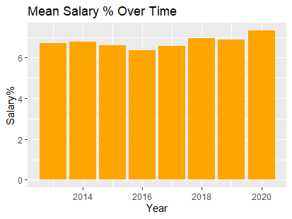
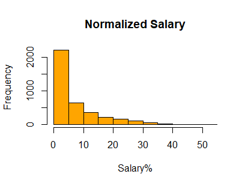
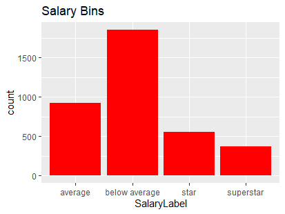
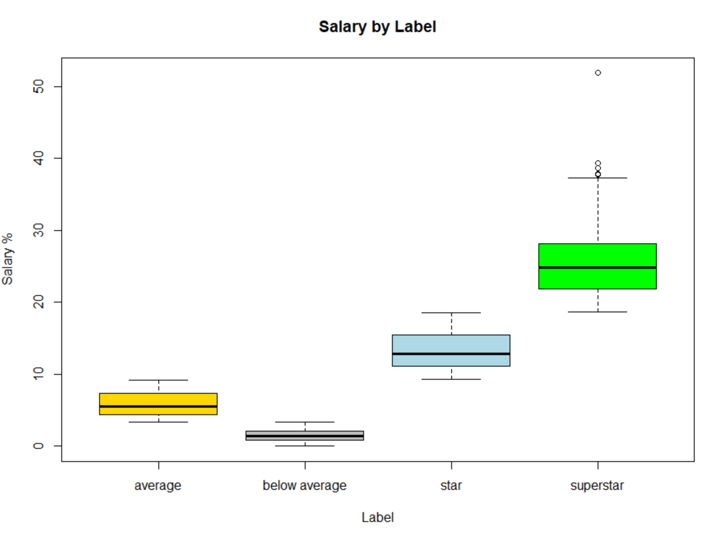
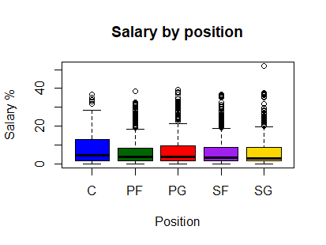
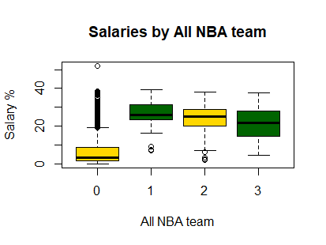
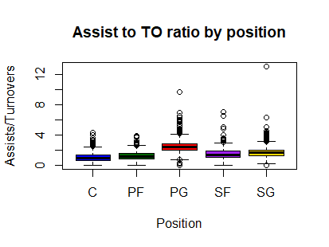
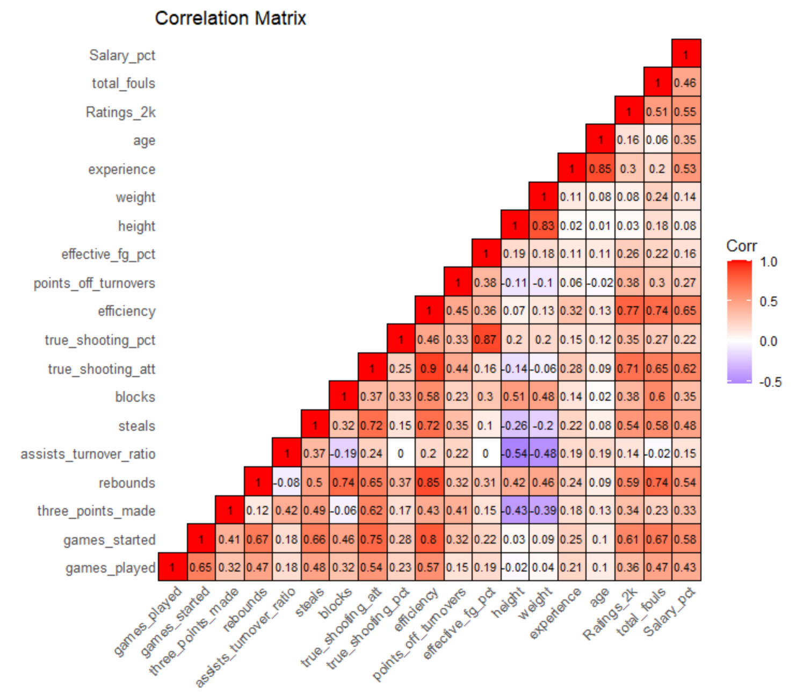

Both the record and text data are ripe with interesting findings. A sample of the interesting findings for both datasets are presented below.
Salary data as is is not consistent. Problems in analysis will result due to the rapid increase of Salaries and Salary Cap over time. The growth post the NBA lockout has been extreme and consistent. In fact, the salary cap has nearly tripled over this time frame and the mean salary has nearly doubled:
 A new column to categorize salary was created that is more normalized to have a more consistent method for tracking salary; Salary as a percentage of the Salary Cap. This variable has no information loss as relative levels are still maintained however the growth over time is very minimal.
This new variable will allow for better, more reliable analysis for predicting salary as time dependency is removed.
Adding labels to players as a function of their salaries will make analysis more informative, and given that salary is the main variable of interest, it makes sense to group players who are in the same pay range.
Given the distribution of salary, binning is a good approach to take. For more context on the variable of Salary as a percentage of the Salary Cap, the current cap in the NBA is around $112 million. Thus a salary of 10% represents an $11.2 million contract in 2020, well above the mean of $8.32 million in 2020. To keep the bins general at first, 4 seperate tiers will be made: below average, above average, star, and superstar. These bins will reflect different levels of player salaries. The below average bin will include players who make below the median (below 3.41%), reflecting around a $3.9 million salary. The above average bin will include players who make anywhere from the median to the 75th percentile of salary (3.41%%-9.25%) reflecting salaries from $3.9 million to around $10.5 million (in 2020 terms). The star's bin will have salaries from the 75th percentile to the 90th percentile (9.25%-18.59%) reflecting salaries from $10.5 million to $21 million. The last bin, superstar, will include the top 10% of NBA earners.
As expected, the lowest bins include the most players and size decreases for each bin. These labels are not exhaustive by any means and as always, there will be exceptions. The new labeled data and normalized labeled data can be used for further analysis.
Now that there are complete and labeled datasets, some exploration can be undertaken. Given the relevance of the salary variable, looking at how it varies based on some of the categories in the data is a good place to start.
Looking at the boxplot, this indicates that the labels for salary are differing as expected. There is a clear ramp up in median and average salary for each label.
Interestingly, there is a relatively large spread in salaries for centers, although the median salary is in line with the other positions. This extra dispersion for centers is likely due to the massive skill differences at this position throughout the NBA. Centers can be the best and most highly paifd players on a team (like Joel Embiid or Nikola Jokic), but many teams also play utility players at the position or do not have a true center and rotate individuals. The consistency of the median's across positions is a somewhat surprising result as conventional wisdom usually places higher value on the PG, SG, and SF positions especially in the modern NBA, but clearly front offices take a more balanced approach.
No surprise here, those who make an All NBA team make significantly more than those who do not, and salary decreases for each lesser All NBA team a player is on. Notice the large outlier for non All NBA players. That data point is 2013 Kobe Bryant, far and away the highest salary by percentage of the Salary Cap (he made 52% of the league cap that year).
Throughout the exploration, some potential issues in the data have arisen.
Notice the outlier at SG, this data point is from Dakota Mathias who played 8 games in the 2020 season. Going forward, it may be worthwhile to drop rows for players who played less then a certain threshold of games to limit players having statistics that are not representative of their actual skill level.
Now that some relevant patterns and issues have been identified, a correlation matix of the numeric variables in the dataste will provide a nice bird's eye view of the variables.

Some worthy notes on this matrix are the efficiency, true shooting attempts, 2k ratings, rebounds, and total fouls columns. These are all correlated with other variables (a lot of
which are eachother) yet each represent different aspects of the game. Efficiency and 2k ratings are holistic stats, while true shooting attempts is offensive, and rebounds and total fouls
are defensive in nature. Yet, each of these variables contain highly relevant information and are suspected "heavy lifters" of the analysis methods to follow.
The code used to explore the record data is linked here.
To explore the text data found through the 6 twitter searches ("nba allstar", "nba superstar", "nba legend", "nba star", "nba allstar", and "nba mvp") a wordcloud is a great tool to employ. Below are the wordclouds for the superstar and MVP searches.


Interestingly, the superstar wordcloud is full of just that, names of players who are or have been superstars. Another element of that wordcloud to highlight is the use of words
such as 'potential', 'playoff', and 'win'. These terms reveal an aspect of superstardom that is important; those who become superstars show potential early on, and the "test" to
pass in order to become a superstar is winning in the playoffs. Similarly, in the MVP wordcloud, there are words like 'Final', 'win','champion', and 'DPOY'. A common theme starts
to present itself. Being a star in the NBA not only means being good on an individual basis, but also having playoff success, particularly championship success. Similar themes
are present in the other wordclouds and reveal an element of data that would be interesting to collect; playoff and/or final success.
The code used to create the wordclouds can be found at the bottom of the text file linked here.